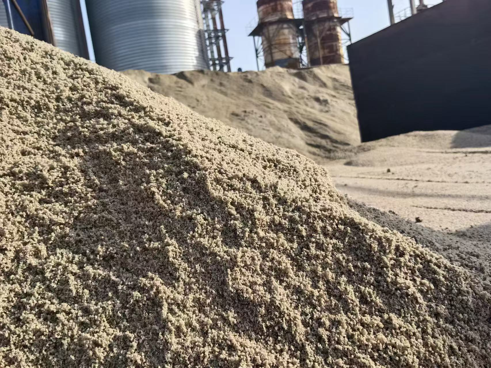

2026-09-28
GGBFS and Fly Ash Blends Sharpen Hydration Qualification
A new study of granulated blast-furnace slag and siliceous fly ash shows why multi-component cement must be qualified as a complete formulation, not as interchangeable commodity inputs.
GGBFS 与粉煤灰复配研究强化水化性能认证
一项关于粒化高炉矿渣与硅质粉煤灰的新研究说明，多组分水泥必须以完整配方进行认证，不能把不同 SCM 当作可随意互换的普通原料。

A paper published online by the Journal of Thermal Analysis and Calorimetry on 24 September 2026 examined how granulated blast-furnace slag and siliceous fly ash affect hydration in model multi-component cements. The research supports a practical procurement message: GGBFS hydration qualification depends on composition, proportions and test conditions—not only a product label.
1. Higher replacement changes reaction timing
The paper reviews how slag and fly ash can reduce early heat evolution and extend the induction period, while slag reactivity is also influenced by fineness, temperature and the degree of clinker substitution. For concrete producers, this means that lower heat can be useful in mass pours, but early-age scheduling and strength development must still be checked for the actual formulation.
2. Blend interactions can be beneficial but are not automatic
The study discusses synergy between slag and siliceous fly ash, including effects on strength development, durability and rheology. Those benefits depend on the materials used and their proportions. A successful laboratory combination should not be copied to a new source without confirming chemistry, fineness, glass content, variability and compatibility with the cement and admixture system.
3. Model results guide screening, not final acceptance
The authors used simplified model systems with a fixed alite content to isolate hydration effects, and explicitly caution that the absence of other clinker phases limits direct extrapolation to commercial cement. Procurement teams should therefore use research to design test programmes, then qualify the actual GGBFS, fly ash and cement sources under relevant standards and curing conditions.
Takeaway: Multi-SCM cement can reduce clinker use and control heat, but reliable performance comes from formulation-specific evidence. Source approval, blend trials and production consistency remain the bridge between promising chemistry and dependable concrete. Source: Wieczorek and Pichniarczyk, Journal of Thermal Analysis and Calorimetry, published online 24 September 2026.
《Journal of Thermal Analysis and Calorimetry》于 2026 年 9 月 24 日在线发表一项研究，分析粒化高炉矿渣与硅质粉煤灰如何影响模型多组分水泥的水化过程。对采购而言，其实际启示是：GGBFS 水化性能认证取决于成分、比例和试验条件，而不只是产品名称。
1. 更高替代率会改变反应节奏
论文回顾了矿渣和粉煤灰如何降低早期水化热并延长诱导期，同时指出矿渣反应活性还受细度、温度和熟料替代率影响。对混凝土生产商而言，较低水化热可能有利于大体积浇筑，但仍需针对实际配方验证早龄期施工节奏和强度发展。
2. 复配协同可能有益，但不会自动发生
研究讨论了矿渣与硅质粉煤灰在强度发展、耐久性和流变性能方面的协同效应。这些收益取决于具体材料和比例。实验室中成功的组合不能直接复制到新货源，必须重新确认化学成分、细度、玻璃体含量、波动性，以及与水泥和外加剂体系的相容性。
3. 模型结果用于筛选，不能替代最终验收
作者采用固定阿利特含量的简化模型体系，以分离不同材料对水化的影响，并明确提示：缺少其他熟料矿物相会限制结果直接外推到商业水泥。采购团队应利用研究设计试验方案，再依据相关标准和养护条件，对实际矿渣粉（GGBFS）、粉煤灰和水泥来源进行认证。
结论：多 SCM 水泥可以降低熟料用量并控制水化热，但可靠性能来自针对具体配方的证据。货源认证、复配试验和生产稳定性，仍是从有前景的化学机理走向可靠混凝土的桥梁。来源：Wieczorek 与 Pichniarczyk，《Journal of Thermal Analysis and Calorimetry》，2026 年 9 月 24 日在线发表。